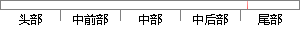

系统的实现过程，硬件上主要以
片段位置图

相似结果
相似片段：
点对图像进行融合，此外还详细介绍本系统中采用的各种图像处理算法。 第五章 芯片显微自动拍照系统的设计与实现 本章主要介绍芯片显微自动拍照系统的实现过程，硬件上主要以PIC单片机为从机，控制步进电机驱动显微镜载物台在X、Y、Z三个方向上的运动，实现芯片图像的自动获取，主机软件集成前面介绍的自动聚焦算法、
| 对比库： | WriteCheck云资源库 |
| 来源： | www.yangsky.com 查看来源 |
| 发布时间： | 2014-01-18 |
| 相似率 | 100% （严重抄袭） |